AI Translator - Frontal & recorded lesson
From language entropy to autonomous agents: what these systems are, how they work, and where they fail.
UnivPM - Università Politecnica delle Marche | Theory track | 8 modules
Mechanics first, then architectures, then consequences.
Shannon to Transformers
Tokens, sampling, temperature
inside + around
Window, RAG, memory
Instructions, skills, tools
MCP and external systems
Model, user, data
Judgement stays human
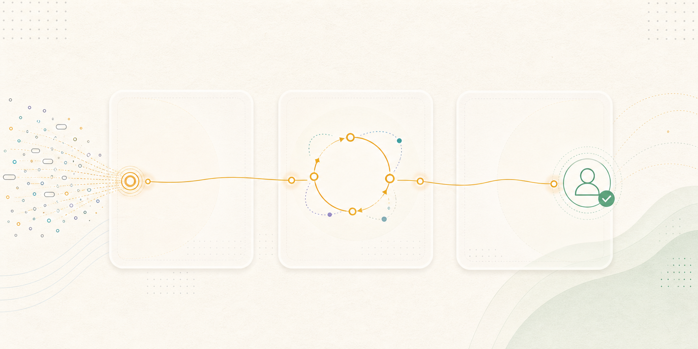
Module 1
From language entropy to the Transformer, to agents, to world models.
Claude Shannon models text as a source emitting symbols with probabilities.
Predicting the next symbol = reducing entropy.
$H = -\sum_i p_i \log_2 p_i$
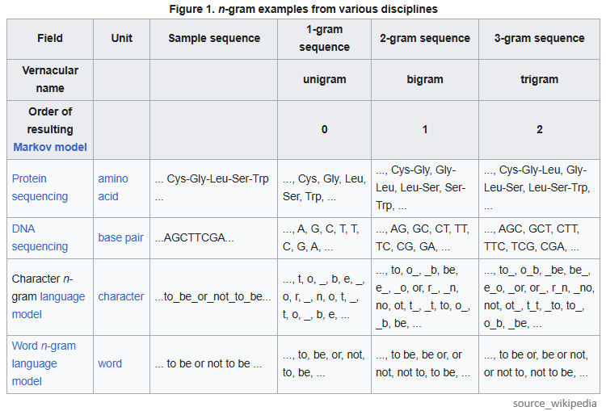
Sources: Shannon (1948) A Mathematical Theory of Communication; Shannon (1951) Prediction and Entropy of Printed English.
Rules and grammars. Clear, brittle, hand-built.
Counts, n-grams, word2vec. Data starts to beat rules.
RNNs, attention, Transformers. Representation is learned.
Sources: Hochreiter & Schmidhuber (1997); Mikolov et al. (2013); Bahdanau et al. (2015).
Self-attention lets every token weigh every other token in parallel.
Parallelism made scale practical; scale made capability visible.
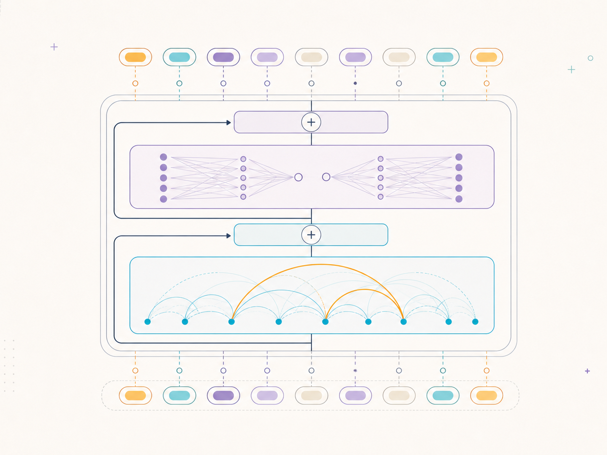
Source: Vaswani et al. (2017), Attention Is All You Need, NeurIPS.
Sources: Devlin et al. (2018); Brown et al. (2020); Ouyang et al. (2022).
Prediction is the substrate, not the ceiling. The mistake is reading a system at the wrong level.
“A livello microscopico abbiamo i neuroni, a livello mesoscopico di mezzo abbiamo queste idee.” — Nello Cristianini (micro = neurons; meso = the learned ideas in between)
The system read at a behavioural, almost psychological level (Dennett's stance) — and the human judgement that governs it.
Relate by: understanding, contesting, overriding.
The abstract ideas the model built by itself (Cristianini's mesoscopic level) — the seat of reasoning, memory, skills and tools.
Relate by: steering with prose, context and tools — this is where you work.
Neurons and weights computing Shannon's next-token probabilities. Always on, intrinsically statistical.
Relate by: knowing its failure modes — sampling, temperature, hallucination.
Sources: Cristianini (2024/2025), Machina Sapiens & interview (micro / meso / macro levels of machine cognition); Marr (1982) levels of analysis; Anderson (1972) More Is Different; Schaeffer et al. (2023) on the metric-sensitivity of “emergence”.
Module 2
Next-token prediction, tokens, and the probabilistic nature of every output.
An LLM computes a probability distribution over the next token:
$P(t_n \mid t_1, t_2, \dots, t_{n-1})$
It samples one token, appends it, and repeats.
The model sees sub-word pieces. That is why some "obvious" letter tasks are mechanically awkward.
Teaching-token view
Widget note: this is a teaching tokenizer; exact splits depend on the model vocabulary.
Source: Sennrich et al. (2016), Byte-Pair Encoding for NMT.
Each token maps to a high-dimensional embedding.
Geometry carries relationships: similar meanings sit nearby.
We meet embeddings again in Module 3 and Module 4.
Sources: Mikolov et al. (2013); Vaswani et al. (2017) section 3.4.
Temperature reshapes the distribution before sampling:
$p_i = \frac{e^{z_i/T}}{\sum_j e^{z_j/T}}$
T = 0.7
Effect exaggerated for understanding the concept.
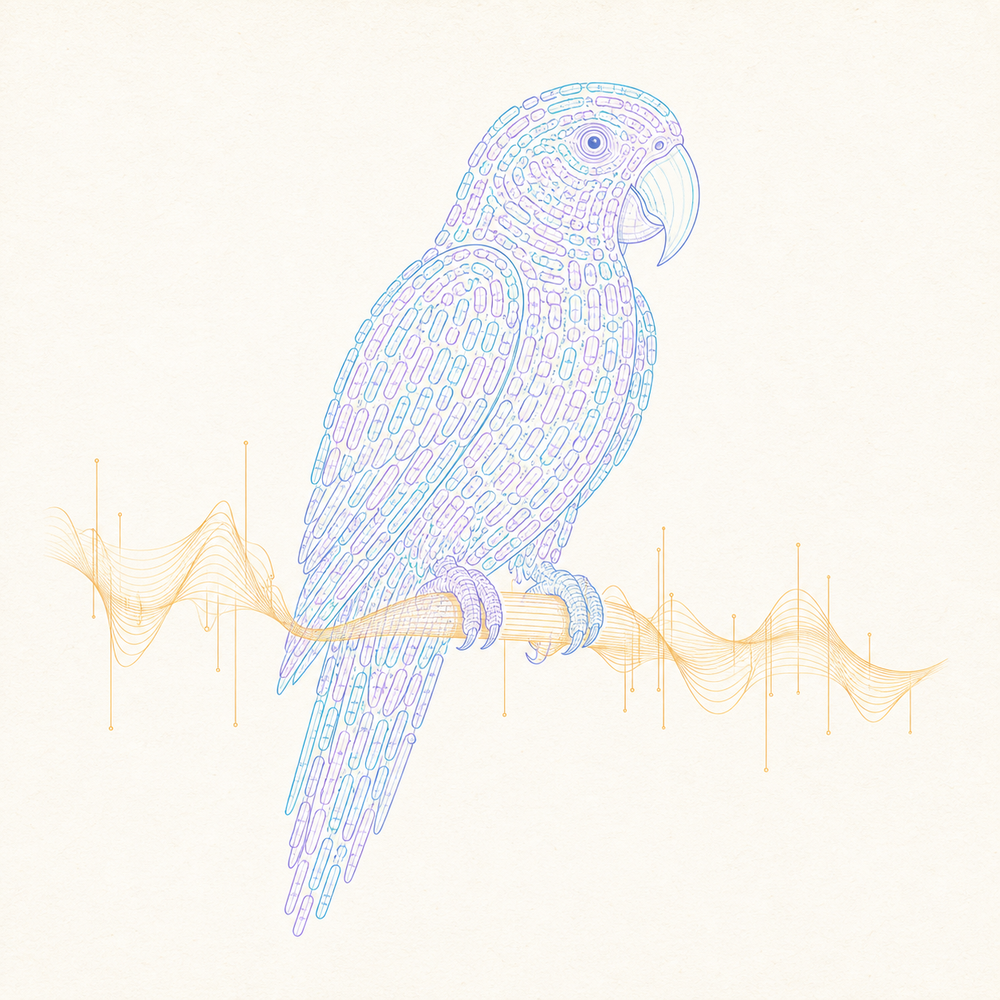
Fluent form can invite us to over-attribute meaning.
Prediction at scale may learn structure that functions like understanding.
Present as a live scientific debate, not a settled verdict. Source: Bender, Gebru, McMillan-Major & Shmitchell (2021).
The model does not retrieve a finished answer. It builds text one token at a time.
Module 3
Two layers people conflate: what is inside the model vs. what is built around it.
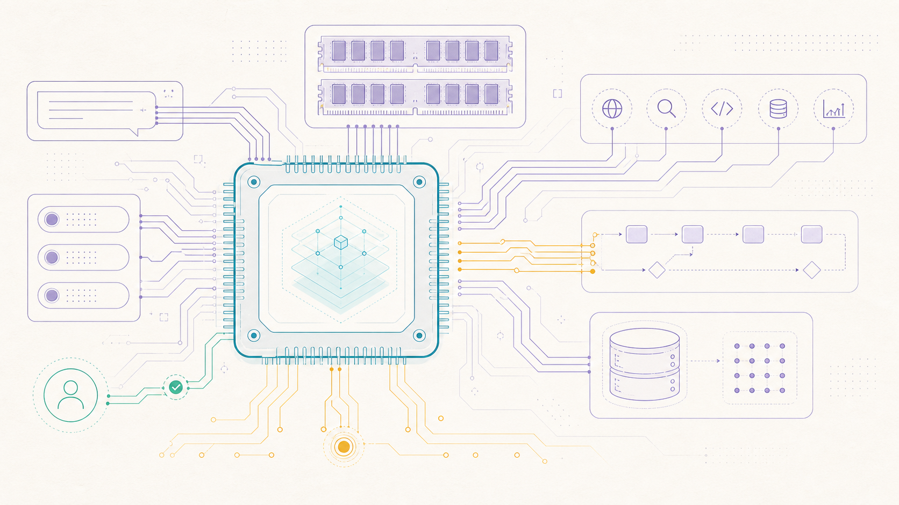
Weights, attention, embeddings, MoE routers and trained behaviours live inside the model.
Memory, tools, retrieval, policies and loops route work around a usually frozen model.
If it changes parameters, it is inside. If it supplies context or actions, it is around.
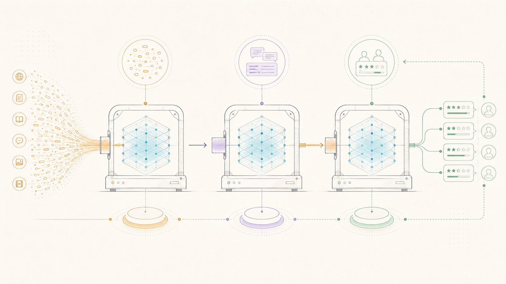
Embeddings live here too: specialised embedding models are later used for retrieval.
Sources: Brown et al. (2020); Ouyang et al. (2022); Christiano et al. (2017).
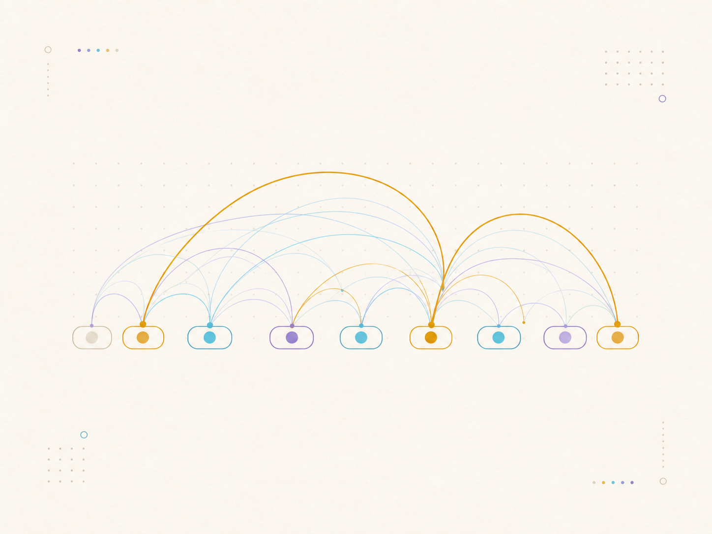
Each token builds a weighted summary of other tokens in the same context.
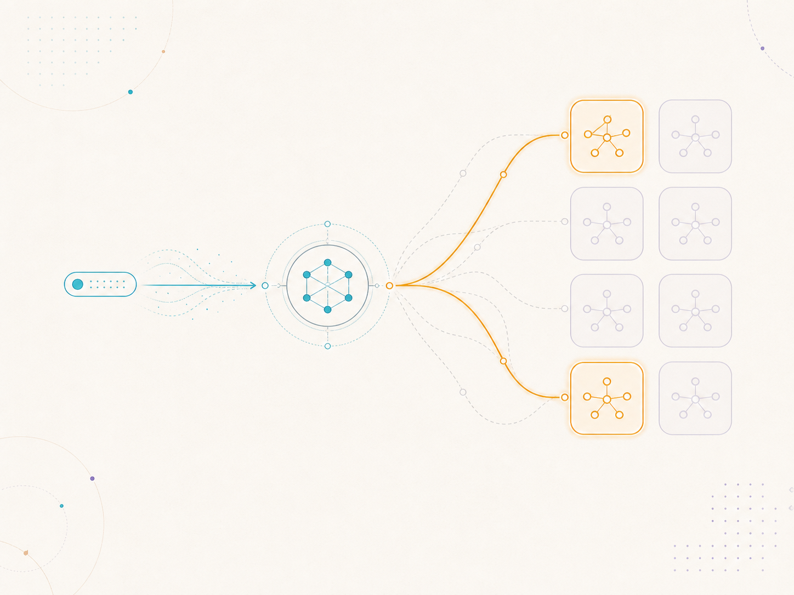
A router activates a small subset of expert blocks, increasing capacity without using all parameters every token.
Sources: Vaswani et al. (2017); Shazeer et al. (2017).
Post-training changes the system so deliberation is part of the model behaviour.
A frozen model is wrapped with instructions, examples or loops that ask it to show steps.
Sources: Wei et al. (2022); Nye et al. (2021).
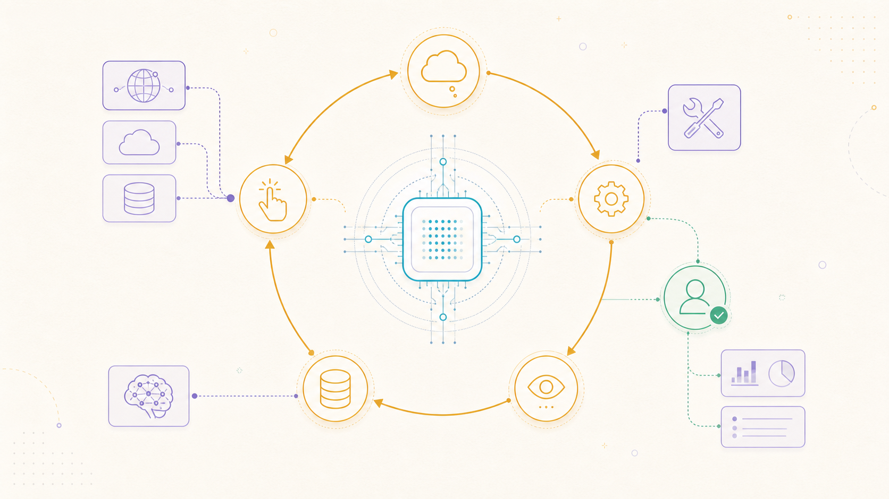
Patterns: ReAct, planning, reflection, multi-agent orchestration. Tools and memory get their own modules.
Sources: Yao et al. (2023) ReAct; Schick et al. (2023) Toolformer.
Module 4
The window, its limits, and how systems remember beyond it.
Context is the model's immediate working memory: what is loaded for this call.
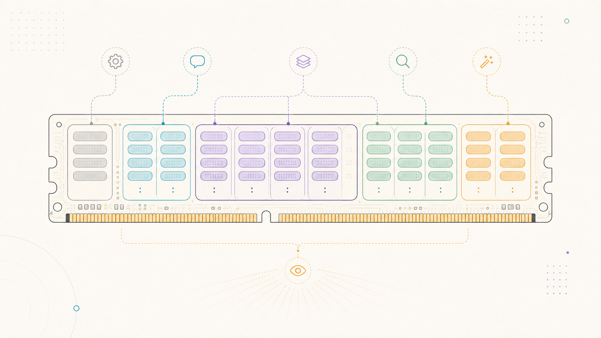
Lost in the Middle is about position-sensitive retrieval: evidence near the beginning or end of a long prompt is often used better than evidence buried in the middle.
A larger window gives more room, but it does not make all positions equally salient. Retrieval and ordering still matter.
Rule of thumb: 1 token is about 0.75 English words; the LOTR trilogy is roughly 480k words.
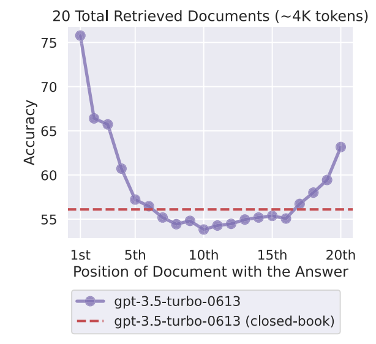
Sources: Liu et al. (2023/24), Lost in the Middle, TACL; Brown et al. (2020); OpenAI DevDay (2023); OpenAI model docs (accessed 2026-07-01).
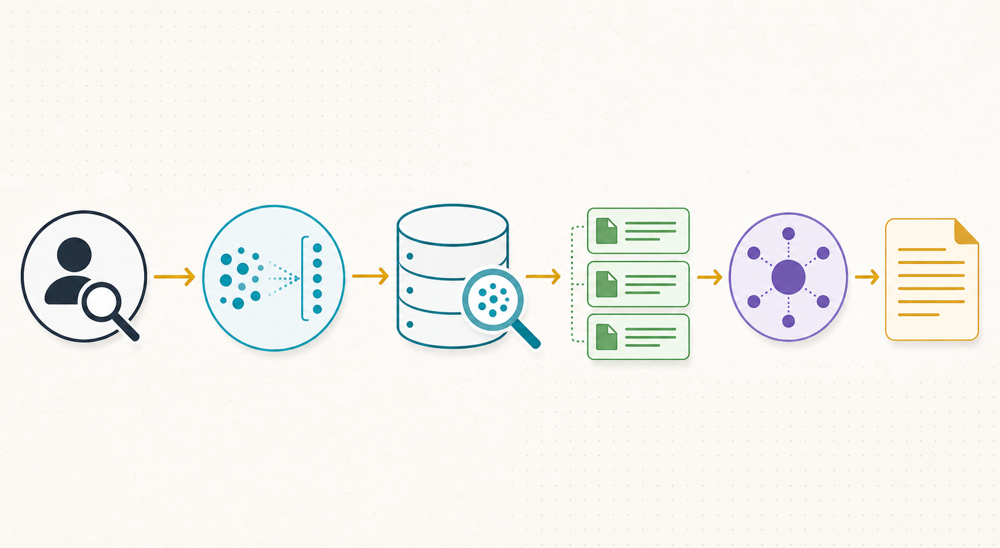
Query Embed Vector search Top-k chunks LLM AnswerSame embeddings from Module 2 - now used as a search index.
Sources: Lewis et al. (2020); Karpukhin et al. (2020).
Conversation history replayed each turn.
Facts stored externally and retrieved when relevant.
Old turns compressed into compact notes.
Module 5
Steering an agent with natural language: instructions, skills, and tools.
Behaviour is specified in layered, plain-language instruction files.
Layers compose: hard rules, project context, task persona.
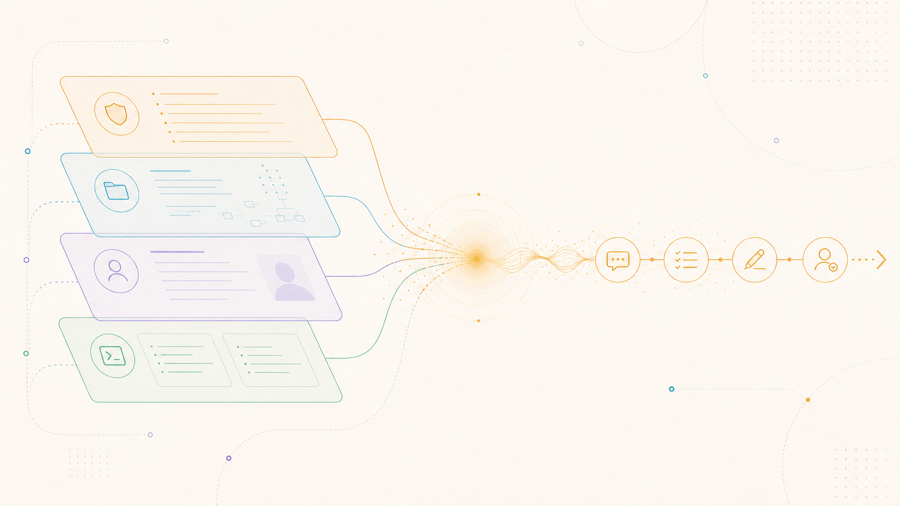
Vendor flavours: CLAUDE.md, AGENTS.md, context.md, "soul" files. Same idea, different filenames.
Humans and models can parse it.
Behaviour changes show up in git.
Headings and lists give salient cues.
A skill is a reusable capability package. It tells the agent when to load extra instructions, scripts and resources.
name, description, trigger rules, instructions, optional scripts/resources.
The description is the match surface: "debug this" loads diagnosis; "grill me" loads a critique flow.
grill-with-docs, caveman, personas, skill-creator.
A tool is procedural: the agent fills a typed input, external code runs, then the result returns to context.
{
"name": "read_pdf",
"description": "Extract text and tables",
"input_schema": {
"file": "path",
"pages": "range"
}
}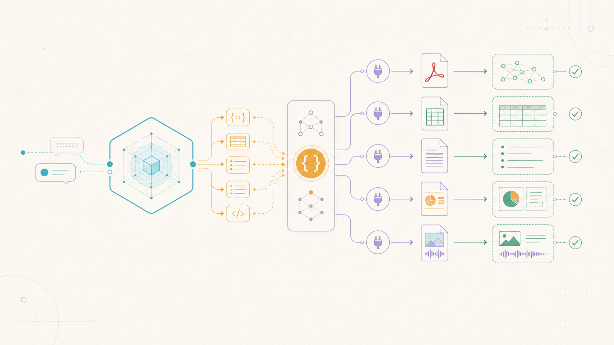
Skills shape how the agent behaves. Tools give it procedures and file-format access.
Module 6
How an agent reaches the outside world: a standard plug, not bespoke wiring.
This is not a diagram about shared data. It is about a shared language format: a convention for how agents ask for work and receive results.
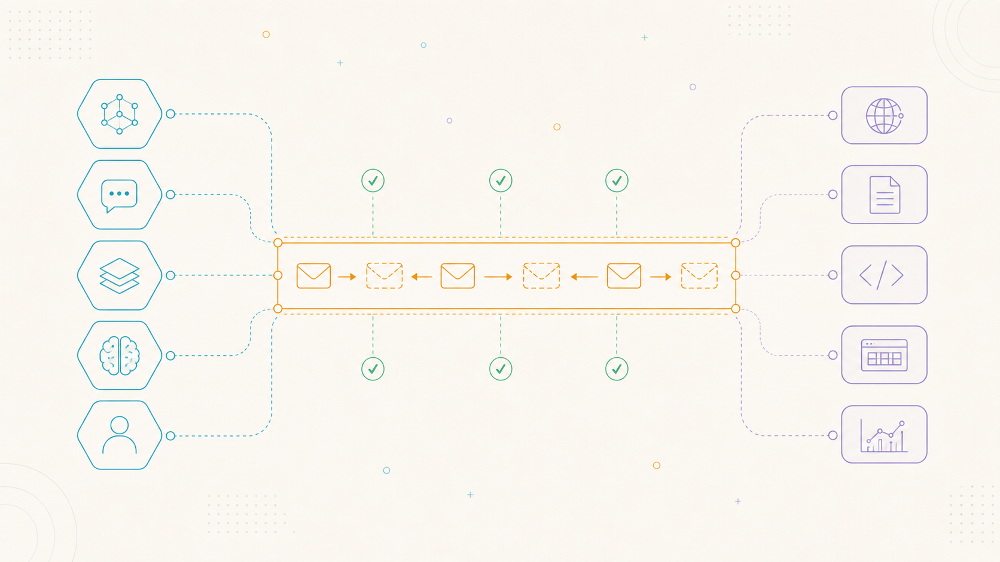
An open standard where a host connects to servers that expose capability in a uniform way.
MCP standardises the envelope around tool calls, resources and prompt templates so an agent can discover what a server offers.
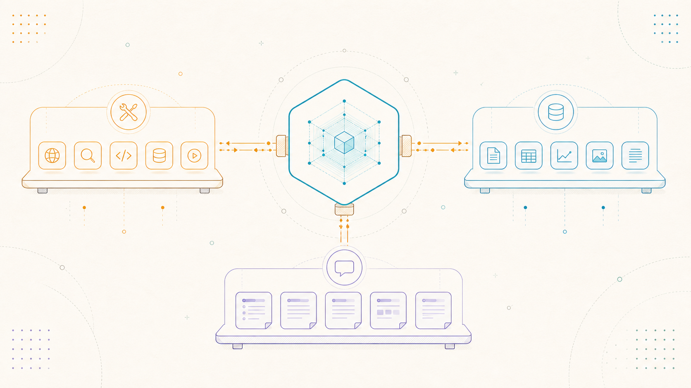
"open standard for connecting AI assistants"Anthropic announcement
"standardizes how applications provide context"MCP introduction
Sources: Anthropic MCP announcement; MCP introduction; MCP architecture.
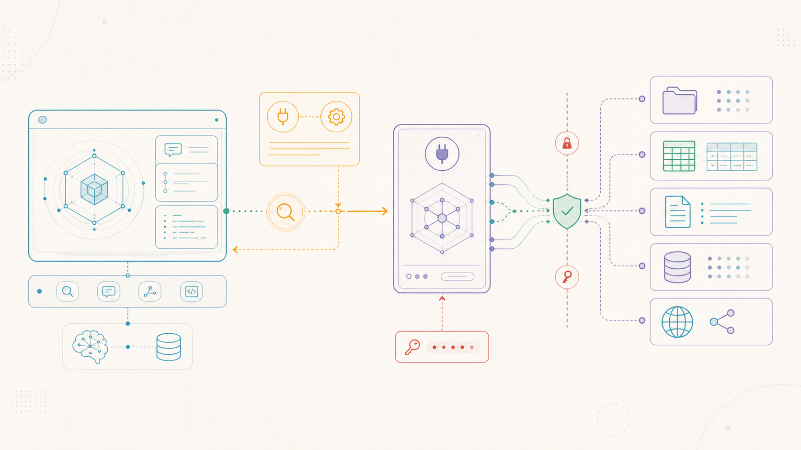
Same security questions as any integration: credentials, scope and trust.
Module 7
Three layers of failure: the model, the user, and the data.
Fluent, confident, false.
Training-data skews carried into outputs.
Agreeing with the user over being correct.
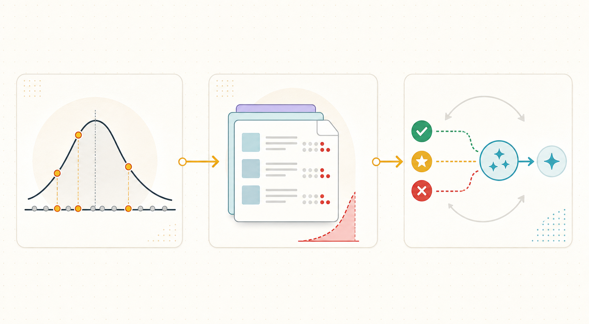
sampling training data feedback signalsAll three trace back to Module 2: the model optimises plausible text, not truth.
Sources: Ji et al. (2023); Perez et al. (2022); Sharma et al. (2023).
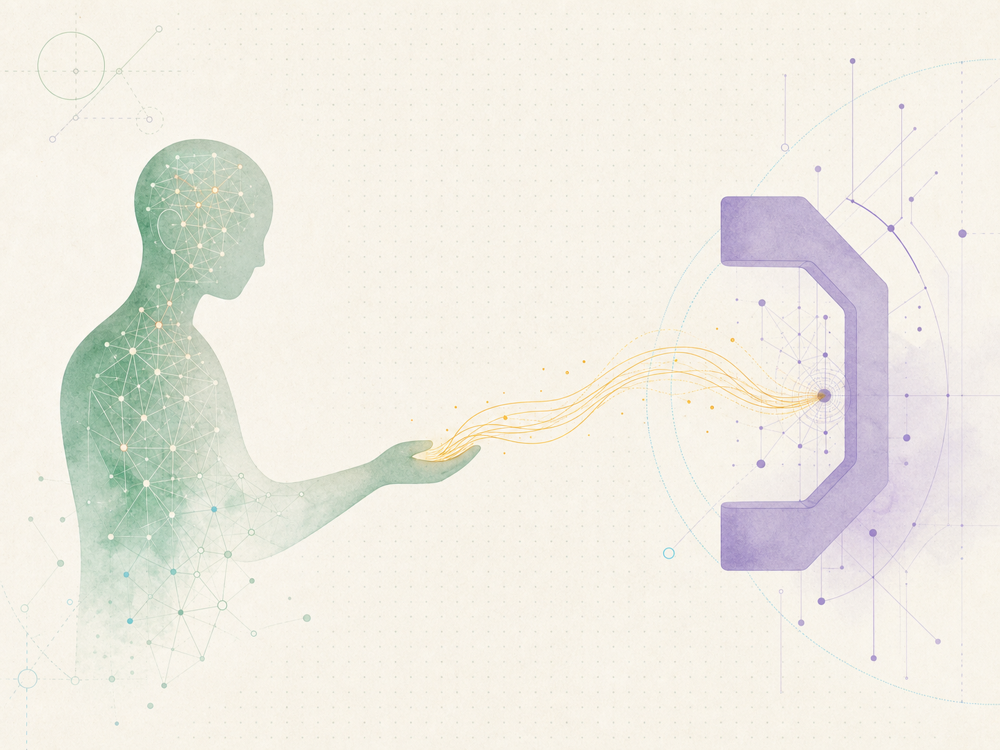
Offloading thinking can erode the skill being offloaded.
Polished output feels more accurate than it is.
Recommendation and social systems can amplify familiar beliefs and misinformation.
Sources: Risko & Gilbert (2016); Sparrow, Liu & Wegner (2011); Lee & See (2004); Lee et al. (2025); Del Vicario et al. (2016); Cinelli et al. (2021).
Who can see prompts and uploaded data?
Untrusted text becomes an instruction.
RAG corpora and credentials become targets.
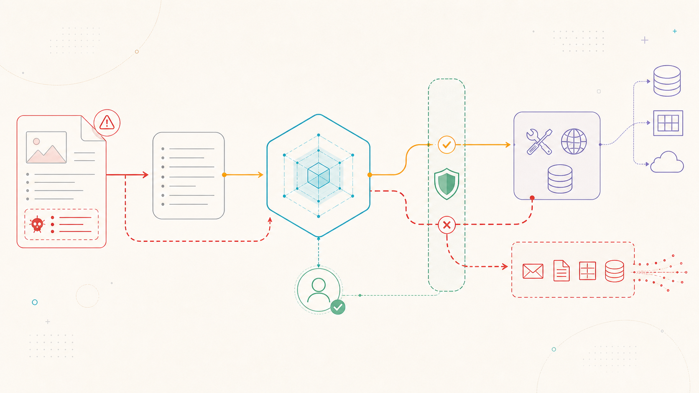
Sources: Greshake et al. (2023); OWASP Top 10 for LLM Applications.
Module 8
The human in the loop, who owns the data, and what happens to human capability.
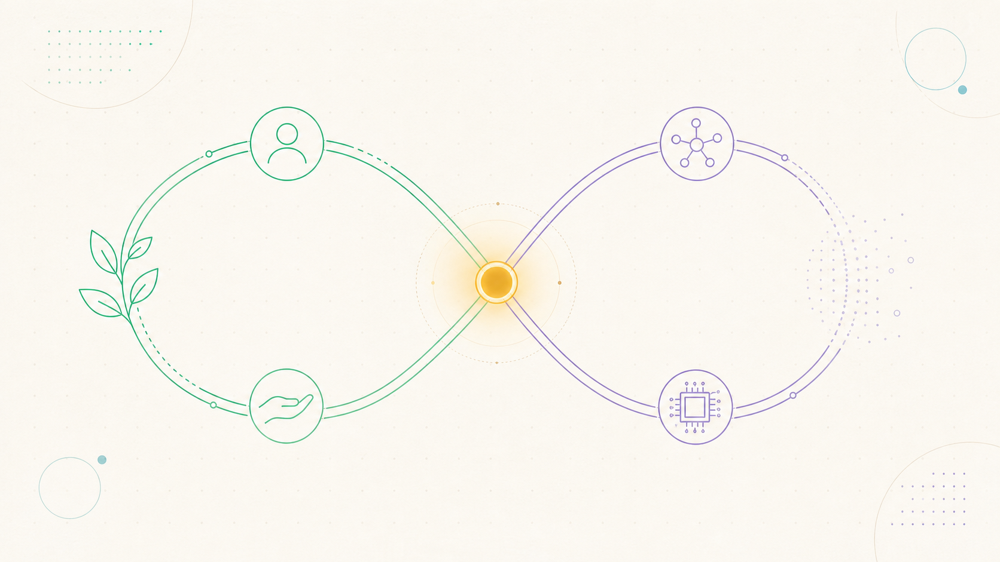
Human sets goals, reviews consequential action, holds responsibility.
Human as rubber stamp; automation complacency wins.
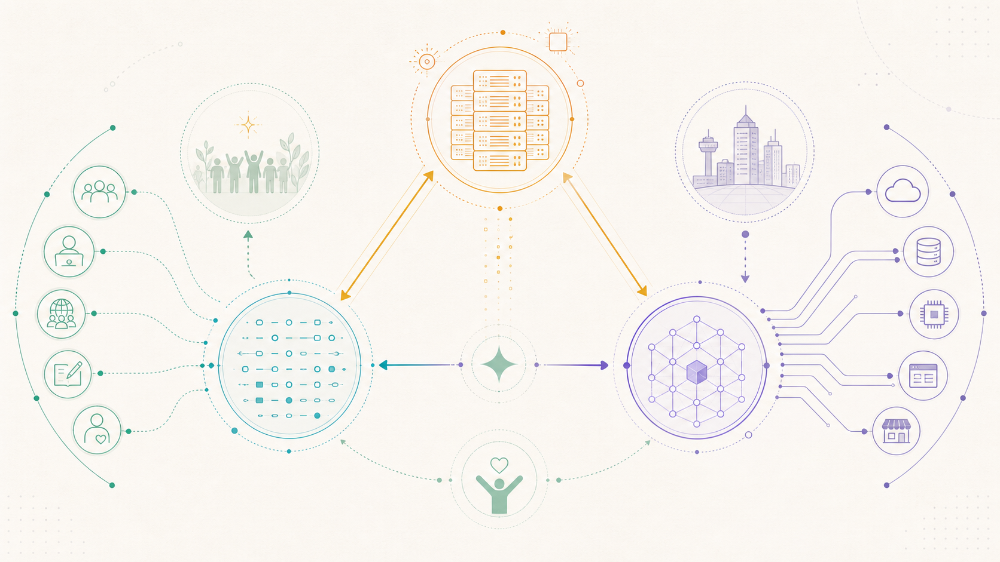
Training corpora and attribution.
Few firms control frontier compute.
Your questions are data too.
AI extends reach: drafts, search, scale, translation between domains.
Some cognitive labour is displaced. Which skills do we choose to keep?
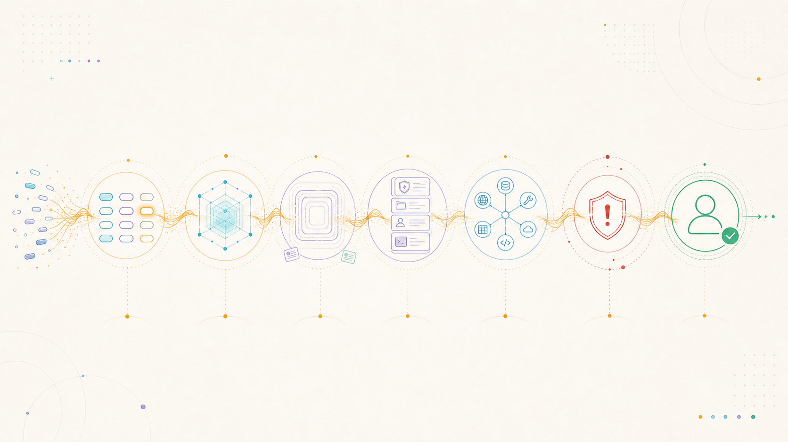
Appendix
Linked primary sources used in the theory track.
1 - History
Shannon (1948), A Mathematical Theory of Communication.
Shannon (1951), Prediction and Entropy of Printed English.
Cristianini (2025), Machina Sapiens — micro/meso/macro levels of machine cognition.
Rahwan et al. (2019), Machine Behaviour (Nature).
Marr (1982), Vision — three levels of analysis.
Anderson (1972), More Is Different (Science).
Schaeffer et al. (2023), Are Emergent Abilities a Mirage?
Anthropic (2025), On the Biology of a Large Language Model.
Hochreiter & Schmidhuber (1997), Long Short-Term Memory.
Mikolov et al. (2013), Efficient Estimation of Word Representations.
Bahdanau et al. (2015), Neural Machine Translation by Jointly Learning to Align and Translate.
Vaswani et al. (2017), Attention Is All You Need.
2 - LLM core
Sennrich et al. (2016), Byte Pair Encoding for Neural MT.
Bender et al. (2021), On the Dangers of Stochastic Parrots.
3 - Architectures
Brown et al. (2020), Language Models are Few-Shot Learners.
Ouyang et al. (2022), Training language models to follow instructions.
Christiano et al. (2017), Deep RL from Human Preferences.
Shazeer et al. (2017), Sparsely-Gated Mixture-of-Experts.
Wei et al. (2022), Chain-of-Thought Prompting.
Nye et al. (2021), Show Your Work: Scratchpads.
Yao et al. (2023), ReAct.
Schick et al. (2023), Toolformer.
4 - Context & memory
Liu et al. (2024), Lost in the Middle.
Lewis et al. (2020), Retrieval-Augmented Generation.
Karpukhin et al. (2020), Dense Passage Retrieval.
6 - MCP
Anthropic (2024), Model Context Protocol announcement.
MCP docs, Introduction.
MCP docs, Architecture.
MCP specification, Tools.
7 - Security & risks
Ji et al. (2023), Survey of Hallucination in NLG.
Perez et al. (2022), Model-Written Evaluations.
Sharma et al. (2023), Towards Understanding Sycophancy.
Greshake et al. (2023), Indirect Prompt Injection.
OWASP, Top 10 for LLM Applications.
7-8 - Human factors & ethics
Risko & Gilbert (2016), Cognitive Offloading.
Sparrow, Liu & Wegner (2011), Google Effects on Memory.
Lee & See (2004), Trust in Automation.
Lee et al. (2025), Generative AI and Critical Thinking.
Del Vicario et al. (2016), The Spreading of Misinformation Online.
Cinelli et al. (2021), The Echo Chamber Effect on Social Media.